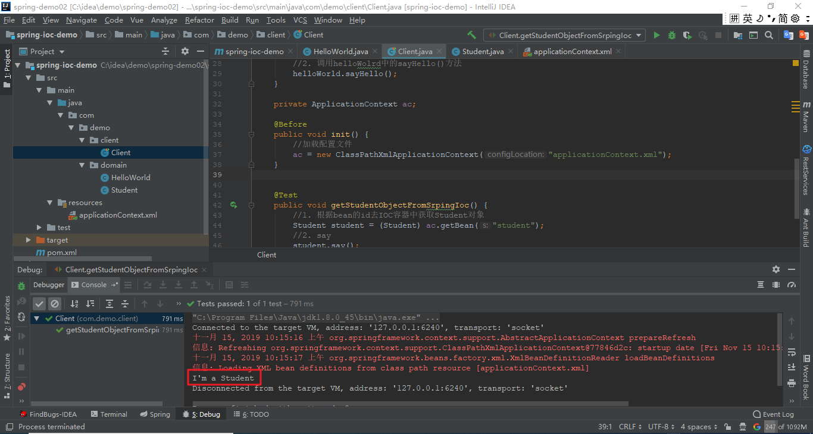
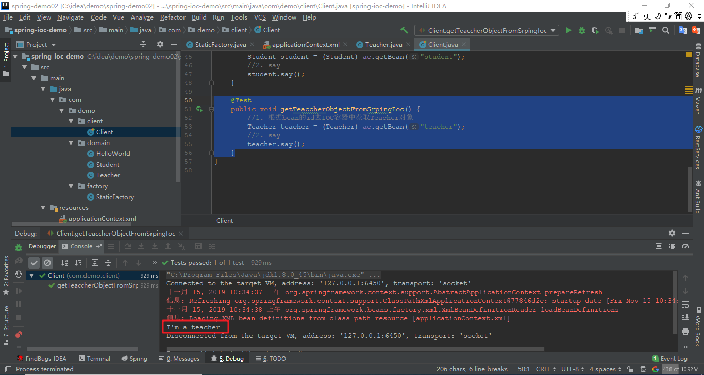
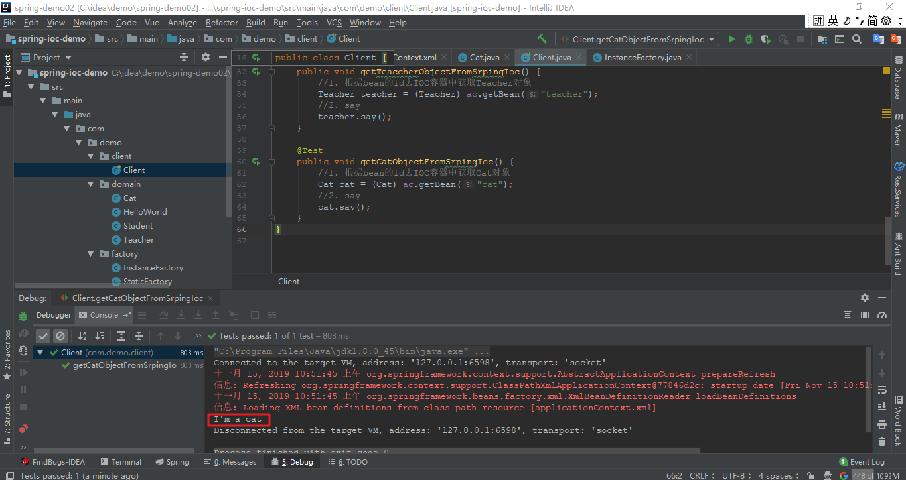

<dependencies>
<!--IOC相关依赖-->
<dependency>
<groupId>org.springframework</groupId>
<artifactId>spring-context</artifactId>
<version>5.0.6.RELEASE</version>
</dependency>
<dependency>
<groupId>junit</groupId>
<artifactId>junit</artifactId>
<version>4.12</version>
</dependency>
</dependencies>applicationContext.xml
<?xml version="1.0" encoding="UTF-8"?>
<beans xmlns="http://www.springframework.org/schema/beans"
xmlns:xsi="http://www.w3.org/2001/XMLSchema-instance"
xsi:schemaLocation="http://www.springframework.org/schema/beans
http://www.springframework.org/schema/beans/spring-beans.xsd">
</beans>
1.1 创建Student实体类
public class Student {
private String name;
private Integer age;
public void say() {
System.out.println("I'm a Student");
}
public String getName() {
return name;
}
public void setName(String name) {
this.name = name;
}
public Integer getAge() {
return age;
}
public void setAge(Integer age) {
this.age = age;
}
}1.2 在applicationContext.xml文件中装配Student对象
<?xml version="1.0" encoding="UTF-8"?>
<beans xmlns="http://www.springframework.org/schema/beans"
xmlns:xsi="http://www.w3.org/2001/XMLSchema-instance"
xsi:schemaLocation="http://www.springframework.org/schema/beans
http://www.springframework.org/schema/beans/spring-beans.xsd">
<!-- 装配Studnt对象到IOC容器中 -->
<bean id="student" class="com.demo.domain.Student"/>
</beans>1.3 测试
private ApplicationContext ac;
@Before
public void init() {
//加载配置文件
ac = new ClassPathXmlApplicationContext("applicationContext.xml");
}
@Test
public void getStudentObjectFromSrpingIoc() {
//1. 根据bean的id去IOC容器中获取Student对象
Student student = (Student) ac.getBean("student");
//2. say
student.say();
}
2.1 创建Teacher实体类
public class Teacher {
public void say() {
System.out.println("I'm a teacher");
}
}2.2 创建静态工厂类
public class StaticFactory {
/**
* 用于创建Teacher对象
* @return
*/
public static Teacher createTeacher() {
return new Teacher();
}
}
2.3 使用静态工厂方法装配Teacher对象
<?xml version="1.0" encoding="UTF-8"?>
<beans xmlns="http://www.springframework.org/schema/beans"
xmlns:xsi="http://www.w3.org/2001/XMLSchema-instance"
xsi:schemaLocation="http://www.springframework.org/schema/beans
http://www.springframework.org/schema/beans/spring-beans.xsd">
<!-- 装配Studnt对象到IOC容器中 -->
<bean id="student" class="com.demo.domain.Student"/>
<!-- 使用静态工厂方法将Teacher对象装配到IOC容器中 -->
<bean id="teacher" class="com.demo.factory.StaticFactory" factory-method="createTeacher"/>
</beans>2.4 测试
@Test
public void getTeaccherObjectFromSrpingIoc() {
//1. 根据bean的id去IOC容器中获取Teacher对象
Teacher teacher = (Teacher) ac.getBean("teacher");
//2. say
teacher.say();
}
3.1 创建Cat实体类
public class Cat {
public void say() {
System.out.println("I'm a cat");
}
}3.2 创建实例工厂类
public class InstanceFactory {
/**
* 用于创建cat对象
* @return
*/
public Cat createCat() {
return new Cat();
}
}3.3 使用实例工厂创建Cat对象
<?xml version="1.0" encoding="UTF-8"?>
<beans xmlns="http://www.springframework.org/schema/beans"
xmlns:xsi="http://www.w3.org/2001/XMLSchema-instance"
xsi:schemaLocation="http://www.springframework.org/schema/beans
http://www.springframework.org/schema/beans/spring-beans.xsd">
<!-- 装配Studnt对象到IOC容器中 -->
<bean id="student" class="com.demo.domain.Student"/>
<!-- 使用静态工厂方法将Teacher对象装配到IOC容器中 -->
<bean id="teacher" class="com.demo.factory.StaticFactory" factory-method="createTeacher"/>
<!-- 使用实例工厂方法实例化bean -->
<!-- 1. 装配实例工厂-->
<bean id="instanceFactory" class="com.demo.factory.InstanceFactory"/>
<!-- 2. 使用实例工厂创建cat对象-->
<bean id="cat" factory-bean="instanceFactory" factory-method="createCat"/>
</beans>3.4 测试
@Test
public void getCatObjectFromSrpingIoc() {
//1. 根据bean的id去IOC容器中获取Cat对象
Cat cat = (Cat) ac.getBean("cat");
//2. say
cat.say();
}
4.1 默认无参构造实例化bean
Spring的IOC在使用bean标签中的class属性配置的类的全限定类名通过反射创建对象，反射时默认调用的是类无参构造方法来实例化该对象的。
4.2 静态工厂方法实例化bean
应用场景：静态工厂方法实例化bean的目的是为了将一个由静态方法获取的对象装配到IOC容器中。
在Spring的配置文件中配置bean标签，通过factory-method来引用获取静态方法返回的对象并装配到Spring的IOC容器中.
4.3 实例工厂方法实例化bean
应用场景：是为了将一个由非静态方法返回的对象装配到IOC容器中。
1、 通过将实例工厂作为一个bean装配到IOC容器中
2、 通过配置一个新的bean，使用factory-bean引用实例工厂这个bean，使用factory-method引用其中的非静态方法获取其返回的对象并将其装配到IOC容器中。